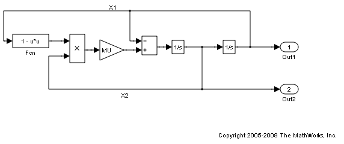
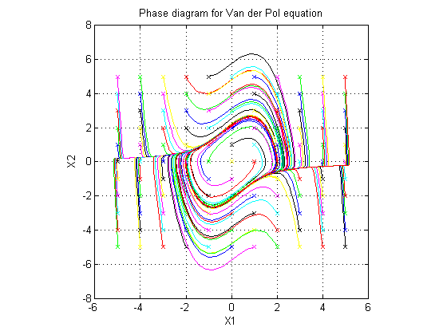

Using RSim Target for Parameter Survey
In this demo we illustrate how the RSim target can be used in applications that require running simulations over a range of parameter values. We use the Van der Pol oscillator as an example and perform a parameter sweep over a range of initial state values to obtain the phase diagram of a nonlinear system.
It is very easy to customize this demo for your own application by modifying the MATLAB script used to build this demo. Click the link in the top left corner of this page to edit the MATLAB script. Click the link in the top right corner to run this demo from MATLAB®. When running this demo, make sure you are in a writable directory. The demo creates files that you may want to investigate later.
Contents
Step 1. Preparation
Make sure the current directory is writable because this demo will be creating files.
[stat, fa] = fileattrib(pwd); if ~fa.UserWrite disp('This script must be run in a writable directory'); return end
Open the model and configure it to use the RSim target. For more information on doing this graphically and setting up other RSim target related options, look here.
mdlName = 'rtwdemo_rsim_vdp'; open_system(mdlName); cs = getActiveConfigSet(mdlName); cs.switchTarget('rsim.tlc',[]);
Set the Inline parameters option. Specify as Tunable the variables INIT_X1 (the initial condition for state x1), INIT_X2 (the initial condition for state x2), and MU (the gain value). In this demo we will be investigating how the state trajectories evolve from different initial values for the states x1 and x2 in the model. To see how to select tunable parameters and set their properties graphically, look here.
set_param(mdlName,'RTWInlineParameters','on'); set_param(mdlName,'TunableVars','INIT_X1,INIT_X2,MU'); set_param(mdlName,'TunableVarsStorageClass','Auto,Auto,Auto'); set_param(mdlName,'TunableVarsTypeQualifier',',,');
Define the names of files that will be created during this demo.
prmFileName = [mdlName, '_prm_sets.mat']; logFileName = [mdlName, '_run_scr.log']; batFileName = [mdlName, '_run_scr']; exeFileName = mdlName; if ispc exeFileName = [exeFileName, '.exe']; batFileName = [batFileName, '.bat']; end aggDataFile = [mdlName, '_results']; startTime = cputime;
Step 2. Build the Model
Build the RSim executable for the model. During the build process, a structural checksum is calculated for the model and embedded into the generated executable. This checksum is used to check that any parameter set passed to the executable is compatible with it.
rtwbuild(mdlName);
### Starting Real-Time Workshop build procedure for model: rtwdemo_rsim_vdp ### Successful completion of Real-Time Workshop build procedure for model: rtwdemo_rsim_vdp
Step 3. Get the Default Parameter Set for the Model
Get the default rtP structure (parameter set) for the model. The modelChecksum field in the rtP structure is the structural checksum of the model. This must match the checksum embedded in the RSim executable (generated in step 2 above). If the two checksums do not match, the executable will generate an error. The option 'AddTunableParamInfo' = 'on' specified to rsimgetrtp will generate an rtP structure with entries for the named tunable variables INIT_X1, INIT_X2 and MU in the model.
rtp = rsimgetrtp(mdlName,'AddTunableParamInfo','on')
rtp =
modelChecksum: [4.1652e+009 2.6683e+009 997664237 4.2698e+009]
parameters: [1x1 struct]
Step 4. Create Parameter Sets
Using the rtp structure from step 4, we build a structure array with different values for the tunable variables in the model. As mentioned earlier, in this demo we want to see how the state trajectories evolve for different initial values for the states x1 and x2 in the model. Hence we generate different parameter sets with different values for INIT_X1 and INIT_X2 and leave the tunable variable MU at the default value.
INIT_X1_vals = -5:1:5; INIT_X2_vals = -5:1:5; MU_vals = 1; nPrmSets = length(INIT_X1_vals)*length(INIT_X2_vals)*length(MU_vals)
nPrmSets = 121
Note that in this demo we have nPrmSets parameter sets, i.e., we need to run that many simulations. Initialize aggData, which is a structure array used to hold the parameter set and the corresponding results.
aggData = struct('tout', [], 'yout', [], ... 'prms', struct('INIT_X1',[],'INIT_X2',[], 'MU', [])) aggData = repmat(aggData, nPrmSets, 1);
aggData =
tout: []
yout: []
prms: [1x1 struct]
The utility function rsimsetrtpparam is a convenient way to build the rtP structure by adding parameter sets one at a time with different parameters values.
idx = 1; for iX1 = INIT_X1_vals for iX2 = INIT_X2_vals for iMU = MU_vals rtp = rsimsetrtpparam(rtp,idx,'INIT_X1',iX1,'INIT_X2',iX2,'MU',iMU); aggData(idx).prms.INIT_X1 = iX1; aggData(idx).prms.INIT_X2 = iX2; aggData(idx).prms.MU = iMU; idx = idx + 1; end end end
Save the rtP structure array with all the parameter sets to a MAT-file.
save(prmFileName,'rtp');
Step 5. Create a Batch File
We create a batch/script file to run the RSim executable over the parameter sets. Each run reads the specified parameter set from the parameter MAT-file and writes the results to the specified output MAT-file. Note that we use the time out option so that if a particular run were to hang (because the model may have a singularity for that particular parameter set), we abort the run after the specified time limit is exceeded and proceed to the next run.
For example, the command (on Windows®)
model.exe -p prm.mat@3 -o run3.mat -L 3600 2>&1>> run.log
specifies using the third parameter set from the rtP structure in prm.mat, writing the results to run3.mat, and aborting execution if a run takes longer than 3600 seconds of CPU time. In addition, all messages from model.exe while it is running are piped to run.log. In case of any problems, we can look at run.log to help debug.
fid = fopen(batFileName, 'w'); idx = 1; for iX1 = INIT_X1_vals for iX2 = INIT_X2_vals for iMU = MU_vals outMatFile = [mdlName, '_run',num2str(idx),'.mat']; cmd = [exeFileName, ... ' -p ', prmFileName, '@', int2str(idx), ... ' -o ', outMatFile, ... ' -L 3600']; if ispc cmd = [cmd, ' 2>&1>> ', logFileName]; else % (unix) cmd = ['.' filesep cmd, ' 1> ', logFileName, ' 2>&1']; end fprintf(fid, ['echo "', cmd, '"\n']); fprintf(fid, [cmd, '\n']); idx = idx + 1; end end end if isunix, system(['touch ', logFileName]); system(['chmod +x ', batFileName]); end fclose(fid);
Creating a batch file to run the simulations enables us to call the system command once to run all the simulations (or even run the batch script outside MATLAB) instead of calling the system command in a loop for each simulation. This results in a significant performance improvement because the system command has significant overhead.
Step 6. Execute Batch File to Run Simulations
Run the batch/script file, which runs the RSim executable once for each parameter set and saves the results to a different MAT-file each time. Note that this batch file can be run from outside MATLAB.
[stat, res] = system(['.' filesep batFileName]); if stat ~= 0 error(['Error running batch file ''', batFileName, ''' :', res]); end
In this demo we put all the simulation runs into one batch file, ran the batch file to sequentially run 'n' simulations over 'n' parameter sets. For your application this script can be modified to generate multiple batch files, and these batch files are run in parallel by distributing them across multiple computers. Also the batch files can be run without launching MATLAB.
Step 7. Load Output MAT-files and Collate the Results
Here we collect the simulation results from all the output MAT-files into the aggData structure. If the output MAT-file corresponding to a particular run is not found, we set the results corresponding to that run to be NaN (not a number). This situation can occur if a simulation run with a particular set of parameters encounters singularities in the model.
idx = 1; for iX1 = INIT_X1_vals for iX2 = INIT_X2_vals for iMU = MU_vals outMatFile = [mdlName, '_run',num2str(idx),'.mat']; if exist(outMatFile,'file') load(outMatFile); aggData(idx).tout = rt_tout; aggData(idx).yout = rt_yout; else aggData(idx).tout = nan; aggData(idx).yout = nan; end idx = idx + 1; end end end
Save the aggData structure to the results MAT-file. At this point all the other MAT-files can be deleted as the aggData data structure contains the aggregation of all input (parameters sets) and output data (simulation results).
save(aggDataFile,'aggData'); disp(['Took ', num2str(cputime-startTime), ... ' seconds to generate results from ', ... num2str(nPrmSets), ' simulation runs (Steps 2 to 7).']);
Took 10.0313 seconds to generate results from 121 simulation runs (Steps 2 to 7).
Step 8. Analyze Simulation Results
We now have all the data to plot the phase diagram (X2 versus X1) with different initial values for x1 and x2. The diagram shows that, irrespective of the initial condition, the Van der Pol oscillator converges to its natural oscillator mode.
colors = {'b','g','r','c','m','y','k'}; nColors = length(colors);
for idx = 1:nPrmSets
col = colors{idx - nColors*floor(idx/nColors) + 1};
plot(aggData(idx).prms.INIT_X1, aggData(idx).prms.INIT_X2, [col,'x'], ...
aggData(idx).yout(:,1), aggData(idx).yout(:,2),col);
hold on
end
grid on
xlabel('X1');
ylabel('X2');
axis('square');
title('Phase diagram for Van der Pol equation');
